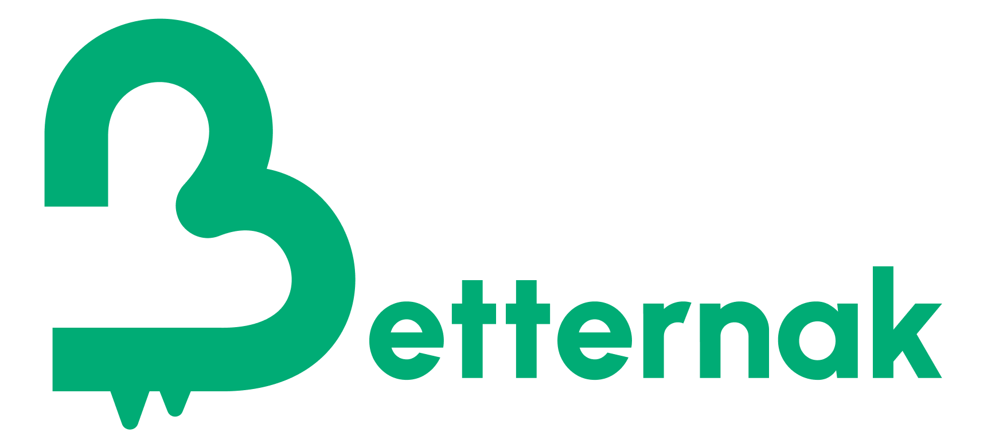
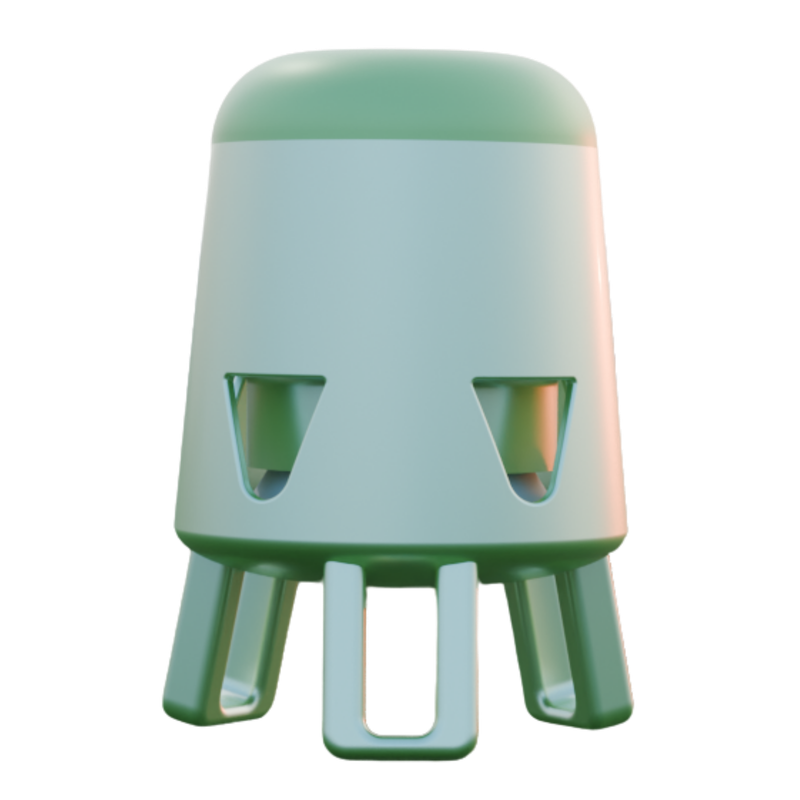

IoPakan merevolusi pemberian pakan ternak. Rekayasa aerodinamis gravitasi terukur, kapasitas 10kg, dan pemantauan IoT cerdas langsung dari ponsel Anda.
Setiap layer dirancang saling mengunci presisi sub-milimeter. Terurai vertikal menyingkap arsitektur mekanikal kokoh dan modular di baliknya.
Ruang tampung 10kg sanggup menyuplai ratusan ayam berhari-hari. Di dalamnya bekerja deflektor piramida 45° anti-gumpal dan piringan dosing presisi.
Piramida deflektor 360° membagi butiran pakan merata ke sekeliling mangkuk tanpa bertumpuk di satu sisi.
Pemberian pakan terotomasi presisi dari smartphone Anda—tanpa repot menakar dan mengontrol manual setiap hari.
Piringan dosing presisi berputar menyalurkan pelet bertahap melalui 5 lubang CAD menuju mangkuk pakan tanpa tercecer ke lantai kandang.
Kaki tripod modular copot otomatis saat di-scroll, menurunkan bodi IoPakan langsung ke lantai untuk anak ayam DOC usia 0–14 hari (40 cm). Pasang kembali saat dewasa (57 cm) untuk menjauhkan pakan dari kotoran sekam.
Pantau sisa pakan real-time lewat sensor loadcell digital, atur jadwal feeding otomatis, atau picu aktuasi pakan seketika langsung dari smartphone Anda.
